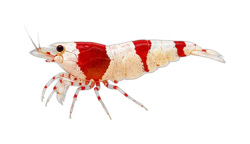
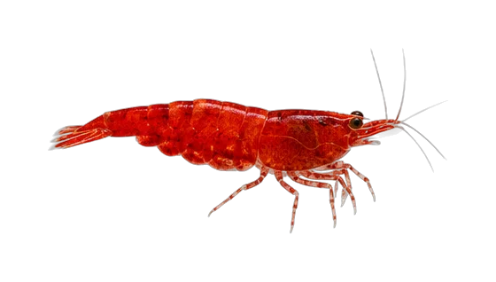

HTML 演示 · 不会保存
我的鱼缸
客厅生态缸⌄MY AQUARIUM · 9 月 2 日
今天先完成一次观察
没有紧急异常。完成检查后，再决定是否需要处理。
状态稳定3 种 · 18 尾过滤已记录


当前生物
缸内物种
查看数量、生命阶段、入缸批次和最近观察。
宝莲灯12 尾 · 成体 · 中层群游
红绿灯6 尾 · 成体 · 中层群游
运营总览
管理鱼缸
设置、设备、提醒和记录集中在这里；编辑配置请使用齿轮按钮。
水体 淡水水量 约 86L过滤 已记录提醒 2 项
时间线
历史记录
昨天 · 换水记录了 20% 换水
8 月 31 日 · 每日检查状态稳定，无需额外处理
8 月 28 日 · 添加记录宝莲灯 × 12 尾
添加入口
添加生物
选择“现实中已有”或“规划饲养”。这是 HTML 演示，不会保存。
配置
鱼缸设置
尺寸、水体、温度和设备配置。HTML 演示，不会保存。
还没有鱼缸生物
空缸状态不会生成虚假物种或推荐。
正在准备3D鱼缸舞台
这是静态 Loading 状态演示。
暂时无法加载今日行动
请重试，或先继续查看鱼缸记录。